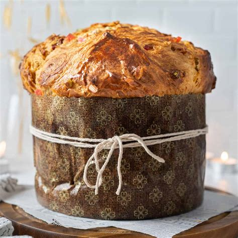
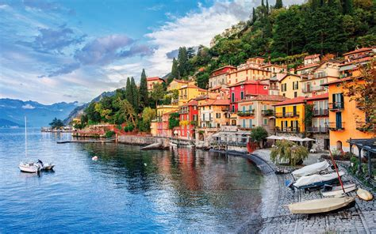
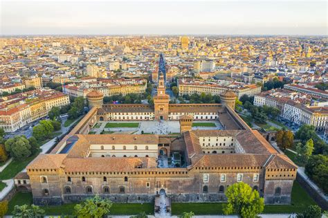
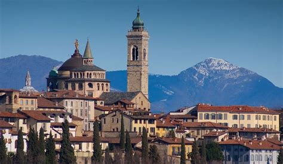

Lombardia
Panoramica
La Lombardia è una regione nel nord Italia. È molto importante per l’economia del paese. Confina con la Svizzera e ha montagne, laghi e grandi città. Il capoluogo è Milano, una città famosa in tutto il mondo per la moda, il design e gli affari.
Fatti in Breve
- Capoluogo: Milano
- Lingua/dialetto Regionale: Lombardo
- Popolazione: Circa 10 milioni
- Economia: Moda, finanza, industria, turismo
- Famosa per: Milano, Lago di Como, Alpi, opera, shopping
- Curiosità: A Milano si trova L’Ultima Cena di Leonardo da Vinci!
Cucina
Risotto alla Milanese

Polenta

Panettone

Taleggio

Luoghi Famosi
Duomo di Milano

Lago di Como

Castello Sforzesco

Santa Maria delle Grazie

Bergamo Alta

Quando visitare
Il periodo migliore per visitare la Lombardia è in primavera (aprile–giugno) e autunno (settembre–ottobre). L’estate è calda in città, ma perfetta per i laghi. L’inverno è ideale per sciare nelle Alpi.
Simboli Regionali
- Bandiera: